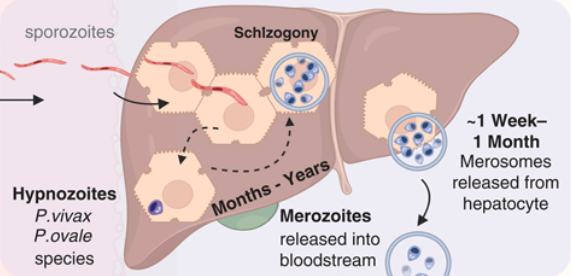

Malaria: Plasmodium Species
Chapter 280 — Infectious Diseases & Epidemiology
2025-01-04
Malaria
Russell E. Lewis
Associate Professor of Infectious Diseases
Department of Molecular Medicine
University of Padua
 |
russelledward.lewis@unipd.it
https://github.com/Russlewisbo
Slides and course materials: www.padovaid.com
Overview
By the end of this lecture, students will be able to:
- Describe the life cycle of Plasmodium and its clinical implications
- Distinguish the six human malaria species by key features
- Apply the WHO criteria for severe malaria
- Select appropriate diagnostic tests and interpret results
- Prescribe evidence-based treatment by species and severity
- Counsel on prevention and chemoprophylaxis
The parasite
{kind=link}
The vector
{kind=link}
Global burden (2023)
{kind=link}
WHO World Malaria Report 2024
- 263 million cases
- 597,000 deaths
- 94% of deaths in Africa
- Most deaths in young children
Taxonomy and nomenclature
{kind=link}
- Phylum: Apicomplexa (with Babesia, Toxoplasma, Cryptosporidium)
- Genus: Plasmodium
- Distinguishing feature: Apical organelle complex (micronemes, rhoptries, dense granules) mediates host cell invasion
Six species that infect humans
| Species | Subgenus | Cycle | Hypnozoites |
|---|---|---|---|
| P. falciparum | Laverania | 48 h | No |
| P. vivax | Plasmodium | 48 h | Yes |
| P. ovale curtisi | Plasmodium | 48 h | Yes |
| P. ovale wallikeri | Plasmodium | 48 h | Yes |
| P. malariae | Plasmodium | 72 h | No |
| P. knowlesi | Plasmodium | 24 h | No |
The Plasmodium life cycle

Clinical implications of the life cycle
Incubation period: 8–25 days (may be longer with partial immunity or prophylaxis)
Hypnozoites (P. vivax, P. ovale):
- Relapses occur months to years after initial infection
- Cannot be treated by standard ACTs — require primaquine or tafenoquine
Cyclical fever reflects synchronous schizont rupture
- Tertian (48 h): P. falciparum, P. vivax, P. ovale
- Quartan (72 h): P. malariae
- Classic periodicity rarely seen at initial presentation
Gametocytes — the transmission stage:
- P. falciparum: not infective until mature stage V (10–12 days)
- Primaquine destroys mature gametocytes, reducing onward transmission
Global distribution
Malaria mortality trends: Two decades of progress and setback
The Great Decline (2000–2015)
- Malaria deaths fell from ~840,000 → ~440,000 (47% reduction)
- Driven by scale-up of LLINs, ACTs, and IRS
- LLIN coverage: <2% → >60% of at-risk populations
- ACT replaced failing chloroquine/SP monotherapy
The plateau and reversal (2015–present)
- Progress stalled since 2015; slight increase in cases
- COVID-19 disruption: estimated +69 million excess cases and +386,000 excess deaths (2020–2021)
- Pyrethroid resistance in vectors; artemisinin resistance spreading
- Chronic underfunding ($4 billion/year needed vs. $3 billion available)
- 350-500 million per yer cut last year lost from USAID program
Global Burden (2023)
| Metric | Value |
|---|---|
| Cases | 263 million |
| Deaths | 597,000 |
| % deaths in Africa | 94% |
| % deaths in children <5 | 76% |
| Countries with malaria | 83 |
| Pregnancies exposed | ~36% in WHO African Region |
Airport malaria and imported cases
Infected Anopheles mosquitoes transported on aircraft
Cases occur within 2 km of international airports in non-endemic countries
> 100 documented cases in Europe since 1969
No travel history → diagnosis often delayed
{kind=link}
Other transmission routes
- Blood transfusion (rare with screening protocols)
- Organ transplantation from endemic-area donors
- Congenital (vertical transmission)
- Nosocomial (contaminated needles/equipment)
Who gets Malaria?
Key risk groups
In Endemic Areas:
- Young children (under 5): bear the brunt of severe disease
- Pregnant women: placental malaria (CSA-binding variants) → low birth weight, maternal anemia
- First-time exposure: older children, adults in epidemic/low-transmission settings
Travelers and Non-immune individuals:
- All ages equally susceptible to severe disease
- Typically return from sub-Saharan Africa (88% of US cases) or Asia (8%)
- ~75% were visiting friends and relatives (“VFR travelers”)
European Context:
Semi-immune travelers from endemic countries who visit family often don’t seek pre-travel advice, underestimate their risk, and are thus at higher risk
They may have partial immunity, but their immunity wanes after years in a non-endemic country
Plasmodium falciparum: Why it’s the killer
Unique Pathogenic Features
Cytoadherence system:
Infected RBCs express PfEMP-1 (var genes, ~60 variants)
PfEMP-1 binds endothelium via CD36, ICAM-1, EPCR, CSA
Results in microvascular obstruction
Rosetting:
iRBCs bind uninfected RBCs → clusters obstruct capillaries
High parasitemia: - Invades all RBC ages → can exceed 10%
Parasite morphology

(A) P. knowlesi merozoite invading RBC. (B) P. falciparum trophozoite with hemozoin. (C-D) Knobs and membrane deformation by P. falciparum. (E) Cytoadherence. (F) Rosetting.
Red blood cell rosetting
{kind=link}
Resulting pathology
| Binding molecule | Syndrome |
|---|---|
| EPCR | Cerebral malaria |
| CSA | Placental malaria |
| CD36 | Microvascular sequestration |
| ICAM-1 | Cerebral/systemic |
Cerebral malaria: pathophysiology
{kind=link}
Left: Brain histology showing sequestration of parasitized erythrocytes (autopsy). Right: Fluorescein angiography showing retinal whitening (whitened vessels = occluded, nonperfused).
Naturally acquired immunity (“Premunition”)
How immunity develops
- Mediated by IgG antibodies against PfEMP-1 variants, CSP, and merozoite surface proteins
- Requires years of repeated exposure in endemic areas
- Each infection exposes immune system to a subset of ~60 var gene variants
- Cumulative repertoire eventually covers the local PfEMP-1 variant spectrum
- Results in “disease-controlling immunity” — not sterilizing
Key features
- Reduces severity, not infection
- Parasites still circulate but at low density
- Rapidly lost without ongoing exposure (months to a few years)
Clinical implications of malaria premunition
| Population | Immunity | Risk |
|---|---|---|
| Children <5 y in endemic areas | Minimal | Highest morbidity/mortality |
| Older children/adults in endemic areas | Partial (premunition) | Asymptomatic parasitemia |
| Emigrants from endemic areas (years later) | Waned | At risk again |
| Non-immune travelers | None | Severe disease at any age |
| Pregnant women (primigravida) | Reduced for placental variants | Placental malaria |
Host genetic factors: Malaria’s evolutionary legacy
Malaria = strongest known evolutionary selection force on the human genome
Protective traits (Heterozygote advantage)
| Trait | Protection | Mechanism |
|---|---|---|
| Sickle cell trait (HbAS) | ~90% vs. severe Pf | HbS polymerization → reduced sequestration; enhanced innate immunity |
| α-thalassemia | ~60% vs. severe Pf | Oxidative stress in parasitized RBCs |
| G6PD deficiency | ~50% vs. Pf | Increased oxidative damage to parasite |
| Hemoglobin C (HbAC) | ~30% vs. severe Pf | Impaired PfEMP-1 display |
| Hemoglobin E (HbAE) | Variable | Common in SE Asia |
| Duffy-negative (Fy a−b−) | ~100% vs. Pv | Blocks P. vivax RBC invasion receptor |
| SAO (ovalocytosis) | Variable | Altered RBC membrane |
Clinical implications of host genetic factors
- These traits reach carrier frequencies of 5–25% in endemic regions — balanced polymorphism
- Sickle cell disease (HbSS): homozygous disadvantage but heterozygous carriers (HbAS) strongly protected
- G6PD testing is critical before prescribing primaquine/tafenoquine → hemolytic crisis in deficient patients
- Duffy negativity explains why P. vivax is rare in West Africa (>95% Duffy-negative)
- These genetic factors explain striking geographic variation in malaria susceptibility
Note
Malaria has shaped more human genetic diversity than any other infectious disease
Complications of severe P. falciparum malaria
Cerebral malaria
- GCS <11 (adults) / Blantyre <3 (children)
- Malarial retinopathy: pathognomonic (white-centered hemorrhages, vessel changes)
- Recovery often within 24–48 h of effective therapy (unlike thrombotic stroke)
- Mortality 15–20% even with optimal treatment
- 10–15% of survivors: persistent neurological sequelae
Severe malarial anemia
- Hemolysis + phagocytic removal + bone marrow suppression
- Normocytic normochromic with blunted reticulocyte response
- Hb ≤5 g/dL (children) or ≤7 g/dL (adults) + parasitemia >10,000/μL
- Transfusion often needed; recovery may take weeks
Metabolic/renal
- Metabolic acidosis: Best predictor of mortality
(lactate ≥5 mmol/L)- Tissue hypoxia from anemia + sequestration + hypovolemia
- Hypoglycemia: Children (↓gluconeogenesis, ↑glucose consumption); Adults (quinine-induced hyperinsulinemia)
- Check glucose q1–2h for first 24 hours
- AKI: ATN pattern; hemoglobinuria (“blackwater fever”); often requires dialysis
Pulmonary
- Non-cardiogenic pulmonary edema / ARDS: Sequestration in pulmonary capillaries → endothelial damage
- Can develop after parasite clearance
- Restrict IV fluids (FEAST trial lesson)
Other
- DIC/bleeding: Rare (<5%) but high mortality
- Shock: Bacterial co-infection in 5–8%
Malaria in pregnancy: A special challenge
Placental malaria
- P. falciparum expresses VAR2CSA PfEMP-1 variant
- VAR2CSA binds chondroitin sulfate A (CSA) in placenta
- Infected RBCs accumulate in intervillous space → placental inflammation → impaired nutrient transfer
Consequences
- Maternal: severe anemia, hypoglycemia, cerebral malaria
- Fetal: low birth weight (most important), intrauterine growth restriction, preterm delivery, spontaneous abortion
- Neonatal: increased mortality
Immunity develops with parity
- Primigravidae: highest risk (no anti-VAR2CSA antibodies)
- Multigravidae: progressively protected by antibodies
Prevention in endemic areas
WHO-recommended bundle
- IPTp-SP at every ANC visit from 2nd trimester
- LLIN provided at first ANC visit
- Prompt diagnosis and treatment of symptomatic malaria
Treatment considerations
- Hospitalize all pregnant women with confirmed malaria
- 2nd/3rd trimester: ACTs (artemether-lumefantrine preferred)
- 1st trimester: AL now recommended by CDC if alternatives unavailable
- Avoid: doxycycline, primaquine, tafenoquine
- Delay antirelapse therapy until postpartum
Plasmodium vivax and ovale: Special features
Hypnozoite Biology
- Dormant liver forms activate months to years after exposure
- Relapses usually within 3 years; rare after 5 years
- Not detectable by blood-stage tests
- Cannot be treated by ACTs alone → must add primaquine or tafenoquine
Pathophysiology
- Selectively invades reticulocytes → parasitemia usually <1%
- Recent evidence: asexual stages cytoadhere to lung endothelium → pulmonary pathology
- Total parasite biomass >> peripheral parasitemia (bone marrow, spleen)

Plasmodium vivax and ovale: Special features
Duffy Antigen (DARC)
Critical receptor for P. vivax invasion
- DARC-negative (common in West Africa) → relative resistance
- But P. vivax can still infect DARC-negative individuals at lower parasitemias
- Transferrin receptor 1 recently identified as a reticulocyte-specific receptor
P. ovale
- Two sibling species (curtisi, wallikeri)
- Cannot be distinguished clinically, only by molecular methods
- Cannot be distinguished clinically, only by molecular methods
P. malariae and P. knowlesi: Key points
P. malariae
“The long persistent parasite”
- Quartan (72-hour) cycle
- Prefers older erythrocytes
- Parasitemia typically very low
(often below microscopy threshold) - Can persist asymptomatically for decades
- No hypnozoites — but persistent low-level blood-stage infection
- Generally mild disease, but can cause nephrotic syndrome (immune complex deposition)
P. knowlesi
“The zoonotic danger”
- Zoonosis from long- and pig-tailed macaques
- Found only in SE Asia (Malaysia, Indonesia, Andaman Islands)
- 24-hour replication cycle → rapid parasitemia rise
- Mimics P. malariae morphologically (molecular testing required)
- Hyperparasitemia: >2% (>100,000/μL) = severe
- Severe disease: jaundice, AKI — more common than in P. vivax
The spectrum of malaria infection
Parasitemia
repeated
exposure
Malaria
malaise, chills
"flu-like"
(multi-organ)
severe anemia,
ARDS, AKI
delayed
treatment
Key Clinical Rule
All non-immune travelers from a malaria-endemic area within the past 3 months who present with fever should be considered to have malaria until proven otherwise — regardless of prophylaxis taken.
- Time to severe malaria: can be hours for P. falciparum
- All non-immune patients with confirmed malaria should be hospitalized
Uncomplicated malaria: Clinical features
Symptoms
- Fever (often >39–40°C), chills, rigors, sweating
- Headache, myalgia, arthralgia, malaise, fatigue
- Nausea, vomiting, abdominal pain
- Mild splenomegaly with repeated infections
The classic paroxysm (rare at presentation)
- Cold stage: chills/rigors (30 min–2 h)
- Hot stage: high fever, headache, vomiting (2–6 h)
- Sweating stage: profuse sweating, fatigue (2–4 h)
What Is Typically ABSENT
- Cough, rhinorrhea, upper respiratory symptoms
- Pulmonary consolidation
- Rash
- Lymphadenopathy
WHO Severe Malaria Criteria (Part 1)
One or more of the following, with parasitemia, excluding alternative causes:
| Manifestation | Threshold |
|---|---|
| Impaired consciousness | GCS <11 adults; Blantyre <3 children |
| Prostration | Unable to sit/stand/walk without assistance |
| *Multiple convulsions** | >2 fits in 24 hours |
| Metabolic acidosis | Base deficit >8 mEq/L, or bicarb <15, or lactate ≥5 mmol/L |
| Hypoglycemia | Glucose <2.2 mmol/L (<40 mg/dL) |
| Severe malarial anemia | Hgb ≤5 g/dL (children) / <7 g/dL (adults) + parasitemia |
Important
Adapted from WHO Guidelines for Malaria, October 2023
WHO Severe Malaria Criteria (Part 2)
| Manifestation | Threshold |
|---|---|
| Renal impairment | Creatinine >265 μmol/L (3 mg/dL) or urea >20 mmol/L |
| Jaundice | Bilirubin >50 μmol/L with high parasite count |
| Pulmonary edema | Radiographic confirmation, or SpO₂ <92% with RR >30 |
| Significant bleeding | Hematemesis, melena, prolonged bleeding |
| Shock | Decompensated: SBP <80 mmHg adults, <70 mmHg children |
| Hyperparasitemia | P. falciparum >10%; P. knowlesi >100,000/μL |
Warning
In severe malaria: START TREATMENT FIRST. Diagnostic confirmation is important but should not delay therapy.
Parasite Morphology: Species Differentiation
{kind=link}
Key microscopy features for speciation
| Feature | P. falciparum | P. vivax | P. ovale | P. malariae | P. knowlesi |
|---|---|---|---|---|---|
| RBC size | Normal | Enlarged | Enlarged | Normal | Normal |
| Schüffner’s dots | ❌ | ✅ | ✅ | ❌ | ❌ |
| Max parasitemia | >10%* | <2% | <1% | <1% | Variable |
| Gametocyte shape | Banana | Round | Round | Round | Round |
| Distinctive feature | Multiple rings, no mature stages in periphery | Ameboid trophozoites | Fimbriated RBCs | Band trophozoites | Resembles P. malariae |
| Cycle | 48 h | 48 h | 48 h | *2 h | 24 h |
Warning
P. knowlesi resembles P. malariae on light microscopy — molecular testing (PCR) is required for definitive speciation of P. malariae-like morphology in travelers from SE Asia.
Diagnostic tests: Overview
Microscopy
Gold Standard
- Species ID + quantification ✅
- Available worldwide ✅
- Stage identification ✅
- Requires expertise ❌
- Labor-intensive ❌
- At least 200 fields for negative ❌
Sensitivity: ~50–500 parasites/μL
Rapid Diagnostic Test (RDT)
Frontline Tool
- Rapid result (15 min) ✅
- Microscopy expertise needed ✅
- P. falciparum: sensitivity 94.8% ✅
- No quantification ❌
- False negatives: HRP2 deletions ❌
- Cannot monitor treatment❌
Do NOT use to monitor response
PCR
Reference Standard
- Highest sensitivity ✅
- Species + quantification ✅
- Drug resistance testing ✅
- Available only in reference labs ❌
- Slow turnaround (not for acute Dx) ❌
- Expensive ❌
Best for: speciation confirmation, low-density infections, mixed infections
Comparison of malaria diagnostics
| Feature | Expert Microscopy | Conventional RDT (HRP2/pLDH) | Ultrasensitive RDT | PCR / LAMP | qRT-PCR |
|---|---|---|---|---|---|
| Detection limit | 50–500 parasites/μL (thick); 200–500 (thin) | 100–200 parasites/μL (HRP2); 200–500 (pLDH) | 1–10 parasites/μL | 0.5–5 parasites/μL | 0.02–1 parasite/μL |
| Turnaround time | 30–60 min (trained reader) | 15–20 min | 15–20 min | 1–3 hours (PCR); 30–60 min (LAMP) | 2–4 hours |
| Species ID | Yes (thin smear) | Pf only (HRP2); Pf + pan (combo) | Pf only or Pf + pan | Yes (all species) | Yes (all species) |
| Quantification | Yes (parasites/μL) | No (qualitative) | No (qualitative) | Semi-quantitative | Yes (copies/μL) |
| Equipment | Microscope, stains, trained reader | None (lateral-flow strip) | None | Thermal cycler (PCR) or heat block (LAMP) | RT-PCR instrument |
| Drug resistance | No | No | No | Possible (K13, pfcrt, pfmdr1) | Possible |
| Post-treatment monitoring | Yes | No — HRP2 persists 28+ days | No | Yes | Yes |
| Key limitation | Expertise-dependent; false negatives in early Pf (sequestration) | HRP2 deletions → false neg; no quantification | Limited availability | Not point-of-care; cost | Not point-of-care; cost |
Ancillary laboratory findings in malaria
- Thrombocytopenia (<150 × 10⁹/L) — present in 60–80% of cases; strongly suggestive (sensitivity 60%, specificity 88% for malaria vs. other febrile illness)
- Elevated LDH and indirect bilirubin — markers of hemolysis
- Normocytic normochromic anemia — from hemolysis + bone marrow suppression (↓erythropoietin by TNF-α)
- Metabolic acidosis (base deficit >8, lactate ≥5 mmol/L) — key severity marker
- Hypoglycemia (<2.2 mmol/L adults; <3 mmol/L children <5 y) — check on admission and q1-2h
The HRP2 deletion problem
A Critical Diagnostic Pitfall
PfHRP2 deletions in P. falciparum cause false-negative RDTs based on HRP-2 detection alone.
- Reported from: Eritrea, Ethiopia, Djibouti, Peru, Amazon region
- Prevalence increasing; detected in travelers
- Panel RDTs (HRP2 + pLDH) or microscopy are recommended in affected regions
Clinical implication: A negative RDT does NOT rule out severe P. falciparum malaria. Treat on clinical suspicion if the test is negative but malaria is likely.
Differential diagnosis of malaria
Malaria mimics many diseases — and many diseases mimic malaria
| Category | Diagnoses to Consider | Distinguishing Clues |
|---|---|---|
| Viral | Influenza, dengue, chikungunya, Zika, yellow fever, COVID-19, VHF, viral meningitis | Dengue: more severe myalgia/arthralgia, rash, shorter incubation (4–7 d); Yellow fever: biphasic, relative bradycardia; COVID: anosmia, respiratory Sx |
| Bacterial | Enteric fever (typhoid), nontyphoidal bacteremia, leptospirosis, rickettsiosis, bacterial meningitis | Typhoid: rose spots, relative bradycardia, diarrhea/constipation; Lepto: conjunctival suffusion, biphasic illness; Rickettsia: eschar, rash |
| Parasitic | Acute schistosomiasis (Katayama), African trypanosomiasis, visceral leishmaniasis | Schisto: freshwater exposure, eosinophilia, urticaria; Tryps: chancre, posterior cervical LN; VL: massive splenomegaly, pancytopenia |
Important
Key Principle: In any febrile returned traveler, consider co-infections — malaria + typhoid, malaria + bacteremia, or malaria + dengue are common combinations, especially in sub-Saharan Africa.
Treatment decision framework
(WHO criteria, or unable to take oral medications)
(emergency)
(or unknown)
(P. vivax, P. ovale,
P. malariae, P. knowlesi)
OR ACT
+ Primaquine / tafenoquine
for P. vivax / P. ovale
First-line treatment: Uncomplicated P. falciparum
Artemisinin-Based Combination Therapies (ACTs)
| Regimen | Schedule |
|---|---|
| Artemether-lumefantrine (AL, Coartem) | 3 days × 2 daily (weight-based) |
| Artesunate-amodiaquine | 3 days × 1 daily |
| DHA-piperaquine | 3 days × 1 daily |
| Artesunate-mefloquine | 3 days × 1 daily |
| Artesunate-SP | 3 days AS + single SP |
| Artesunate-pyronaridine | 3 days × 1 daily |
Why ACTs?
- Artemisinins: fastest-acting
- Rapid parasite clearance
- Short half-life → partner drug prevents resistance
- Active against early gametocytes → reduces transmission
Resistant Areas
- SE Asia, parts of East Africa: K13 mutations
- ACT still first-line; add IV quinine for severe disease in these areas
TABLE 280.4 — Weight-Based ACT Dosing
Artemether-Lumefantrine (Coartem) — 6-Dose Regimen Over 3 Days
| Body Weight | Artemether/Lumefantrine per dose | Tablets per dose (20/120 mg) | Schedule |
|---|---|---|---|
| 5–<15 kg | 20/120 mg | 1 tab | 0, 8, 24, 36, 48, 60 h |
| 15–<25 kg | 40/240 mg | 2 tabs | 0, 8, 24, 36, 48, 60 h |
| 25–<35 kg | 60/360 mg | 3 tabs | 0, 8, 24, 36, 48, 60 h |
| ≥35 kg (adult) | 80/480 mg | 4 tabs | 0, 8, 24, 36, 48, 60 h |
⚠️ Must be given with fatty food/milk (lumefantrine requires fat for absorption — bioavailability ↑16-fold)
Other Key ACT Dosing
| Regimen | Adult dose | Key points |
|---|---|---|
| Artesunate-amodiaquine | AS 4 mg/kg/day + AQ 10 mg base/kg/day × 3 days | Fixed-dose combo available (ASAQ) |
| DHA-piperaquine | DHA 4 mg/kg/day + PPQ 18 mg/kg/day × 3 days | Once daily; no food requirement; QTc prolongation risk |
| Artesunate-mefloquine | AS 4 mg/kg/day × 3 days + MQ 8.3 mg base/kg/day × 3 days | MQ given on days 2–3 to reduce vomiting |
| Artesunate-SP | AS 4 mg/kg/day × 3 days + single SP (25/1.25 mg/kg) day 1 | Contraindicated in sulfonamide allergy |
| Artesunate-pyronaridine | AS 4 mg/kg/day + PYR 6 mg/kg/day × 3 days | Repeat courses: check ALT |
Non-ACT Alternatives (when ACTs unavailable)
| Regimen | Dosing | Indication |
|---|---|---|
| Atovaquone-proguanil (Malarone) | Adult: 4 tabs (1000/400 mg) daily × 3 days | Uncomplicated Pf; common in US/Europe |
| Quinine + doxycycline | Quinine 650 mg (10 mg/kg) q8h × 3–7 days + doxy 100 mg BID × 7 days | Alternative; not in pregnancy/children <8 y |
| Quinine + clindamycin | Quinine 650 mg q8h × 3–7 days + clinda 20 mg/kg/day ÷ 3 doses × 7 days | Pregnancy-safe alternative to quinine-doxy |
| Chloroquine | 600 mg base, then 300 mg at 6, 24, 48 h (total 25 mg base/kg) | P. vivax/ovale/malariae & CQ-sensitive Pf areas only |
Antirelapse Treatment: The Radical Cure
Mandatory for P. vivax and P. ovale
ALL cases must receive an 8-aminoquinoline to eliminate hypnozoites. ACTs/chloroquine treat only the blood stage — they do NOT prevent relapse.
Primaquine
- 0.5 mg base/kg/day × 14 days (standard)
- OR 1 mg base/kg/day × 7 days (high dose; geographic regions)
- Can be used in children ≥6 months
- Contraindications: pregnancy, severe G6PD deficiency
Tafenoquine (Krintafel)
- Single 300 mg dose (CDC) for age ≥16 years
- More convenient — but longer half-life (~12 days) → greater hemolysis risk if G6PD-deficient
- Requires quantitative G6PD testing
- Contraindications: pregnancy, G6PD deficiency, history of psychosis
G6PD Testing is MANDATORY Before Prescribing Either Drug
Qualitative testing sufficient for primaquine if no severe deficiency; quantitative/semiquantitative required before tafenoquine.
Treatment of Severe Malaria
Drug of Choice: IV Artesunate
Standard dose: - 2.4 mg/kg IV at 0, 12, 24 h (3 doses) - Then 2.4 mg/kg IV once daily
Children <20 kg (WHO recommendation): - 3 mg/kg per dose
US availability: - Commercially available - If not in stock: CDC Malaria Hotline: 770-488-7788 - After hours: 770-488-7100
Post-treatment hemolysis: Monitor for delayed hemolytic anemia (especially non-immune travelers with hyperparasitemia)
Areas with Partial Artemisinin Resistance
(SE Asia, parts of East Africa)
Use IV artesunate PLUS IV quinine simultaneously: - Quinine loading: 20 mg salt/kg over 4 h - Then 10 mg salt/kg q8h
Follow-on Oral Therapy
Once parasite density ≤1% and tolerating oral: - Artemether-lumefantrine (preferred) - Or another ACT
Adjunctive Measures
- Seizures: benzodiazepines
- Hypoglycemia: IV glucose
- Restrict IV fluids (FEAST trial)
- Empiric antibiotics if shock
- NO dexamethasone (worsens outcomes)
Severe Malaria: ICU Management Pearls
Fluid Management
- Adults: restrictive fluid strategy (pulmonary edema risk)
- Children: FEAST trial showed fluid boluses increased mortality in African children with severe febrile illness → avoid rapid boluses
- Target euvolemia; use vasopressors early if shock persists
- Monitor urine output (target ≥0.5 mL/kg/h)
Respiratory
- ARDS can develop during or after treatment (as parasitemia clears)
- Low threshold for intubation with lung-protective ventilation
- Prone positioning if severe ARDS
Hematologic
- Exchange transfusion / RBC exchange: consider for parasitemia >10% with severe features
- Automated erythrocytapheresis preferred over manual exchange
- WHO no longer formally recommends (insufficient evidence), but widely practiced in US/Europe
- Post-artesunate delayed hemolysis (PADH): hemolytic anemia 1–3 weeks after IV artesunate, especially in non-immune patients with high initial parasitemia
- Monitor Hgb weekly for 4 weeks after treatment
Metabolic
- Check glucose every 1–2 hours (quinine/quinidine stimulate insulin secretion)
- Correct acidosis with hemodynamic support, not bicarbonate
- Monitor lactate as prognostic marker
Parasitemia Monitoring During Treatment
Protocol for Severe Malaria
- Baseline: Quantify parasitemia at diagnosis
- Every 12 hours: Repeat thick/thin smear until negative
- Expected clearance: parasitemia should ↓ by ≥75% at 48 h
- Switch to oral ACT: when parasitemia <1% AND patient tolerating PO
- Day 7 and Day 28: follow-up smears to detect recrudescence
Red Flags During Treatment
- Parasitemia not decreasing at 24–48 h → consider artemisinin resistance
- Parasitemia rising despite treatment → re-evaluate drug delivery, consider exchange transfusion
- New severe criteria developing → escalate care
Monitoring in Uncomplicated Malaria
- Day 0: Baseline parasitemia
- Day 3: Smear should be negative or near-negative
- Persistent day 3 positivity: suspect partial artemisinin resistance
- Day 7: Confirm cure (particularly in SE Asia)
- Day 28 (or 42): Definitive assessment
- PCR-corrected to distinguish recrudescence from reinfection
Clinical Pearl
Parasitemia may transiently increase in the first 12–24 hours of treatment with artemisinins — this is due to splenic release of sequestered parasites and does NOT indicate treatment failure.
Monitoring treatment response
Parasitemia Monitoring
| Time Point | Expected Response |
|---|---|
| Baseline | Quantify parasitemia (parasites/μL) |
| 12 hours | Smear — trend should be downward |
| 24 hours | ≥50% reduction expected with ACTs |
| 48 hours | ≥75% reduction from baseline |
| 72 hours (Day 3) | Should be negative with effective ACT |
| Day 7 | Confirm clearance |
| Day 28 | Check for recrudescence vs. reinfection |
Red Flags During Treatment
- Day 3 parasitemia >3% (baseline >100,000/μL) → suspect artemisinin resistance
- Rising parasitemia after initial decline → treatment failure
- New organ dysfunction despite falling parasitemia → ARDS (can worsen paradoxically after treatment)
Additional Monitoring in Severe Malaria
- Blood glucose: q1–2h for first 24 h (hypoglycemia common, recurrent)
- Hemoglobin: daily (delayed hemolysis 7–14 days post-artesunate)
- Lactate/base deficit: best mortality predictor
- Renal function: creatinine, urine output
- Fluid balance: restrict IV fluids (FEAST trial)
- Mental status: serial GCS/Blantyre assessments
Post-Artesunate Delayed Hemolysis (PADH)
- Occurs 7–31 days after IV artesunate
- Most common in non-immune travelers with hyperparasitemia
- Mechanism: pitting of once-infected RBCs by spleen → delayed clearance
- Monitor Hb weekly for 4 weeks after severe malaria treatment
Treatment in Pregnancy
| Trimester | Preferred Treatment | Notes |
|---|---|---|
| 1st trimester | Artemether-lumefantrine (if other options unavailable/not tolerated) | 42% lower risk of adverse pregnancy outcomes vs. quinine; CDC recommends if no alternatives |
| 2nd–3rd trimester | Artemether-lumefantrine | Preferred; well-studied safety profile |
| All trimesters | Chloroquine (sensitive areas), quinine + clindamycin | Alternative options |
| Any trimester — AVOID | Doxycycline/tetracycline, primaquine, tafenoquine, halofantrine | Teratogenic or hemolytic risk |
Important
For hypnozoite clearance in pregnancy: Delay primaquine/tafenoquine until after delivery and cessation of breastfeeding. Administer weekly chloroquine suppression until delivery.
Treatment Failure and Recrudescence
Definitions
- Recrudescence: Same parasite strain reappears <28 days after treatment (treatment failure)
- Reinfection: New infection >28 days after treatment (in endemic area)
- Relapse: Hypnozoite activation (P. vivax/ovale), weeks to years after primary infection
Causes of Treatment Failure
- Drug resistance (most important)
- Inadequate dosing (weight-based errors; obesity)
- Poor adherence (incomplete course; vomiting)
- Malabsorption (diarrhea, vomiting)
- Substandard/counterfeit drugs (common in endemic areas — up to 30% in parts of SE Asia and Africa)
Management
| Timing | Likely Cause | Action |
|---|---|---|
| <14 days | Recrudescence (resistance or inadequate Rx) | Switch to a different ACT |
| 14–28 days | Probable recrudescence | Switch ACT; consider PCR genotyping |
| >28 days | Likely reinfection (endemic areas) | First-line ACT again |
| Any time (P. vivax/ovale) | Relapse from hypnozoites | Repeat blood-stage Rx + add antirelapse therapy |
Key Points
- If failure occurs despite prophylaxis → use a different drug class for treatment
- PCR genotyping (microsatellites) can distinguish recrudescence from reinfection
- Always verify: did the patient complete the full course? Did they take AL with fatty food?
Reducing Transmissibility: Gametocytocidal Therapy
The Problem
- Successful treatment clears asexual parasites (rings, trophozoites, schizonts)
- Gametocytes may persist in blood for weeks after treatment
- Gametocytes are not harmful to the patient but are infectious to mosquitoes
- A single treated patient can continue transmission to the community
The Solution: Single Low-Dose Primaquine (SLDPQ)
- 0.25 mg base/kg as a single dose (previously 0.75 mg/kg)
- Given alongside ACT for P. falciparum in low-transmission settings
- Reduces gametocyte carriage by ~two-thirds at day 8
- NOT required in most of sub-Saharan Africa (high transmission — individual effect minimal)
WHO Recommendation
Note
Add single low-dose primaquine (0.25 mg base/kg) to ACT treatment for uncomplicated P. falciparum in areas approaching elimination, to reduce onward transmission.
At this dose, G6PD testing is NOT required (hemolysis risk negligible).
Drug-Lifecycle Matching
| Drug Class | Lifecycle Stage Targeted |
|---|---|
| ACTs | Asexual blood stages (rings → schizonts) |
| Primaquine/tafenoquine (14d) | Hypnozoites (liver) |
| Single low-dose primaquine | Stage V gametocytes |
| Chloroquine | Asexual blood stages (CQ-sensitive only) |
TABLE 280.5 — Chemoprophylaxis: Drug Selection
| Drug | Coverage | Adult Dose | Pediatric Dose | Timing | Key AEs / Contraindications |
|---|---|---|---|---|---|
| Atovaquone-proguanil | All areas | 250/100 mg (1 tab) daily | 62.5/25 mg (¼ tab) daily (11–20 kg); 125/50 mg (½ tab) 21–30 kg; 187.5/75 mg (¾ tab) 31–40 kg; adult dose >40 kg | 1–2 d before → 7 d after | GI upset; take with food; not in pregnancy or <5 kg |
| Doxycycline | All areas | 100 mg daily | 2.2 mg/kg/day (≥8 years only) | 1–2 d before → 4 wk after | Photosensitivity; esophagitis; not in pregnancy or <8 y |
| Mefloquine | All areas except SE Asia | 228 mg base weekly | 5 mg base/kg weekly (≥5 kg); max 228 mg | 1–2 wk before → 4 wk after | Neuropsych AEs; seizure hx; cardiac conduction defects |
| Tafenoquine (Arakoda) | All areas; esp. P. vivax | 200 mg daily × 3 d load → 200 mg weekly | Not approved <18 y | 3 d before → 7 d after | G6PD testing required; pregnancy; psychosis hx |
| Chloroquine | CQ-sensitive only | 300 mg base weekly | 5 mg base/kg weekly | 1–2 wk before → 4 wk after | Retinal toxicity (prolonged use); pruritus; only CQ-sensitive areas |
| Primaquine | P. vivax areas | 30 mg base daily | 0.5 mg base/kg daily (≥6 mo) | 1–2 d before → 7 d after | G6PD testing required; not in pregnancy |
Antimalarial Side Effect Profiles
| Drug | Common Side Effects | Serious / Rare Reactions | Counseling Points |
|---|---|---|---|
| Artemether-lumefantrine | Headache, dizziness, nausea | QT prolongation (avoid with other QT-prolonging drugs) | Take with fatty food (↑ lumefantrine absorption by 2–3×) |
| Atovaquone-proguanil | GI upset, headache | Rare: Stevens-Johnson syndrome | Take with food; avoid in severe renal failure (CrCl <30) |
| Doxycycline | Photosensitivity, GI upset, esophagitis | Rare: pseudotumor cerebri | Take upright with full glass of water; sunscreen essential |
| Mefloquine | Vivid dreams, dizziness, insomnia | Neuropsych: anxiety, psychosis, seizures (1:10,000–1:13,000) | Screen for psych history; give test dose 2 wk before travel |
| Primaquine | GI upset, methemoglobinemia | Hemolytic anemia (G6PD-deficient) | Always check G6PD; take with food |
| Tafenoquine | Headache, dizziness | Hemolytic anemia (G6PD-deficient); vortex keratopathy | Quantitative G6PD required; long half-life = sustained hemolysis |
| Chloroquine | Pruritus (esp. dark skin), GI upset | Retinopathy (long-term use), cardiomyopathy | Annual eye exam if prolonged use (>5 years) |
| IV Artesunate | Post-artesunate delayed hemolysis (PADH) | Transient neutropenia | Monitor CBC weekly × 4 weeks post-treatment |
Malaria Prevention in Endemic Populations
Intermittent Preventive Treatment in Pregnancy (IPTp)
- Sulfadoxine-pyrimethamine (SP) at each scheduled ANC visit starting 2nd trimester
- ≥3 doses at ≥1 month intervals recommended by WHO
- Reduces placental malaria, low birth weight, and neonatal mortality
- Must be given as DOT (directly observed therapy) at ANC clinic
- Do not give in 1st trimester or within 1 month of delivery
- Also provide LLIN at first ANC visit
Important
IPTp is one of the most cost-effective maternal health interventions in sub-Saharan Africa.
Seasonal Malaria Chemoprevention (SMC)
Monthly SP + amodiaquine for children 3–59 months during rainy/transmission season
3–4 monthly cycles per season
WHO-recommended in Sahel sub-region of Africa
Efficacy: >75% reduction in uncomplicated malaria episodes; >50% reduction in mortality
45 million children treated in 2022
Perennial Malaria Chemoprevention (PMC)
- SP given at routine immunization contacts (10 wk, 14 wk, 9 mo)
- For areas with year-round transmission
- Formerly called “IPTi” (intermittent preventive treatment in infants)
Non-Pharmacologic Prevention
Personal Protective Measures
- DEET-containing repellents (≥20%) on exposed skin
- Permethrin on clothing/gear
- Long-sleeved shirts and long pants, especially dusk to dawn (peak Anopheles biting time)
- LLINs (Long-Lasting Insecticidal Nets) in sleeping areas
- Air conditioning and window screens
Public Health/Vector Control
- Indoor Residual Spraying (IRS) with insecticides
- Environmental management (draining stagnant water)
- Larval control
- Population-level treatment programs (SMC, MDA)
Challenge: Insecticide Resistance
- Pyrethroid resistance increasingly common in African Anopheles
- New insecticide classes and bed net formulations in development
- Anopheles stephensi urban expansion in East Africa
Pre-Travel Counseling: A Practical Approach
Risk Assessment
- Destination: country AND specific region (malaria risk varies within countries)
- Itinerary: urban vs. rural, altitude, season (rainy season = higher risk)
- Duration: short tourist trip vs. long-term expatriate
- Activities: safari, trekking, field work (outdoor exposure at night)
- Traveler factors: pregnancy, age, G6PD status, drug allergies, comorbidities
Choosing Chemoprophylaxis
- Most destinations: atovaquone-proguanil, doxycycline, or mefloquine
- Short trips: atovaquone-proguanil (start 1–2 d before, stop 7 d after)
- Budget-conscious/long trips: doxycycline (cheapest; start 1–2 d before, continue 4 wk after)
- Mefloquine: weekly dosing (start 2 wk before); neuropsychiatric side effects limit use
- Tafenoquine (Arakoda): weekly during travel + 7 d after; requires G6PD testing
Common Counseling Pitfalls
- ❌ “I’ll take pills if I get sick” → prophylaxis, not standby treatment
- ❌ “I grew up there, I’m immune” → immunity wanes after leaving endemic area
- ❌ “It’s a city, no risk” → urban malaria exists (especially An. stephensi areas)
- ❌ Stopping prophylaxis early after return → most require 4-week continuation (except atovaquone-proguanil: 7 days)
Key Resources for Clinicians
- CDC Yellow Book: destination-specific prophylaxis recommendations
- CDC Malaria Map Application: interactive risk maps
- WHO International Travel and Health: global guidelines
- Counsel on personal protective measures alongside chemoprophylaxis — no drug is 100% effective
G6PD Deficiency and Antimalarials
Why It Matters
- G6PD deficiency is the most common enzymopathy globally (~400 million affected)
- Highest prevalence in malaria-endemic regions (balanced polymorphism — confers partial protection)
- 8-aminoquinolines (primaquine, tafenoquine) cause oxidative hemolysis in G6PD-deficient individuals
- Severity depends on variant: African A− (moderate), Mediterranean B− (severe), SE Asian variants (variable)
Testing Requirements
- Primaquine: G6PD testing required before use; if deficient → 0.75 mg/kg weekly × 8 wk (supervised)
- Tafenoquine: requires quantitative G6PD assay (>70% activity) — qualitative tests insufficient
- Long half-life (~15 days) means hemolysis cannot be stopped by withdrawing drug
Practical Points
- When to test: before prescribing primaquine/tafenoquine for radical cure OR tafenoquine prophylaxis
- Qualitative tests (fluorescent spot): adequate for primaquine screening
- Quantitative tests (spectrophotometric): required for tafenoquine
- Point-of-care biosensors: increasingly available in endemic settings
Timing Matters
G6PD activity is falsely elevated during acute hemolysis or reticulocytosis. Test before treatment or wait until hematologic recovery to get accurate results.
Malaria and Co-Infections
Malaria + HIV
- Bidirectional interaction: HIV increases malaria susceptibility and severity; malaria increases HIV viral load
- HIV-infected patients have higher parasitemia, more frequent treatment failure
- Drug interactions: avoid artesunate + efavirenz (reduced artesunate levels); AL + lopinavir/ritonavir (QT prolongation risk)
- Cotrimoxazole prophylaxis in HIV provides partial malaria protection
Malaria + Bacterial Sepsis
- Non-typhoidal Salmonella bacteremia common with severe malaria (especially children in Africa)
- Impaired splenic function during acute malaria → bacterial translocation
- WHO recommends empiric antibiotics for children with severe malaria + signs of sepsis
Malaria + Pregnancy (Infectious Co-Morbidities)
- Malaria + HIV in pregnancy: synergistic risk of severe anemia, LBW, maternal mortality
- IPTp-SP less effective in HIV+ women → cotrimoxazole prophylaxis recommended instead
Tropical Fever Overlap Syndromes
- Dengue + malaria: co-endemic in SE Asia, South Asia — dual positivity occurs
- Thrombocytopenia in both → hemorrhagic risk compounded
- Typhoid + malaria: classic co-infection in sub-Saharan Africa; blood cultures essential
- Leptospirosis: similar presentation; consider in travelers with freshwater exposure
Clinical Pearl
Never assume a single diagnosis in a febrile returned traveler. Blood cultures, dengue serology, and malaria testing should often be sent simultaneously.
Malaria Vaccines: A New Era
RTS,S/AS01 (Mosquirix)
- WHO recommended 2021 for children in endemic areas
- Based on P. falciparum circumsporozoite protein (CSP) fused to hepatitis B surface antigen + AS01 adjuvant
- Phase 3 trial (11 African sites, >15,000 children):
- Efficacy 5–17 mo age group: 39% against clinical malaria over 4 years (4 doses)
- Efficacy against severe malaria: 29% (with booster)
- Protection wanes substantially after year 1 (~50% → ~25% by year 4)
- 4-dose schedule: 3 doses at monthly intervals (age 5–9 mo), booster at 15–18 months
- Does NOT provide sterilizing immunity — reduces episodes, not infection
- >6 million doses deployed by end of 2024 across Ghana, Kenya, Malawi, Cameroon, and others (RTS,S Clinical Trials Partnership 2015)
R21/Matrix-M
- WHO recommended and prequalified October 2023
- Also targets CSP, but with higher CSP:HBsAg ratio + Matrix-M (saponin) adjuvant
- Phase 3 results (4,800 children, 4 African countries):
- Seasonal administration: efficacy 75% at 12 months (Burkina Faso seasonal trial)
- Year-round settings: efficacy 68% at 12 months
- Booster at 12 months sustained protection at ~70% through 2 years
- 4-dose schedule: 3 monthly doses + booster at 12 months
- Advantages: lower cost (~$2–4/dose vs $9–10 for RTS,S), easier manufacturing (higher yield), thermostable at 40°C for extended periods
- Serum Institute of India plans 100+ million doses/year (Datoo et al. 2022)
Vaccine Pipeline and Monoclonal Antibodies
Next-Generation Vaccine Approaches
| Approach | Stage | Target | Key Feature |
|---|---|---|---|
| PfSPZ Vaccine (Sanaria) | Phase 2 | Whole sporozoites | Attenuated radiation; requires IV route and cold chain |
| PfSPZ-CVac | Phase 2 | Live sporozoites + CQ | Controlled human malaria infection approach |
| mRNA-CSP vaccines | Phase 1 | CSP | Moderna, BioNTech platforms; rapid manufacturing |
| Blood-stage vaccines | Phase 1–2 | RH5, PfAMA1 | Reduce parasite density; anti-disease |
| TBV (Pfs25, Pfs230) | Phase 1–2 | Gametocyte surface | Transmission-blocking; altruistic vaccine |
Monoclonal Antibodies (mAbs)
- CIS43LS and L9LS (anti-CSP mAbs)
- Single IV or subcutaneous injection provides season-long protection (~6 months)
- Phase 2 trial in Malian children and adults: 88% protective efficacy over 6-month malaria season
- Potential role: seasonal chemoprevention alternative, travelers, pregnant women (no G6PD concern)
- Limitations: cost, IV/SC route, limited duration
Challenges Ahead
- No vaccine for P. vivax yet
- Combining vaccines with existing tools (LLINs, SMC) essential
- Equitable global access and funding for scale-up
Artemisinin Resistance: A Growing Threat
Background
- Partial artemisinin resistance = delayed parasite clearance
- Defined as: persistent parasitemia by microscopy at 72 h, OR half-life ≥5 h
- K13 mutations (especially C580Y) confer ring-stage survival
Geographic Spread
- Originally confined to Greater Mekong Subregion (Thailand, Cambodia, Myanmar, Laos, Vietnam)
- Now documented in Rwanda, Uganda, Ethiopia, Eritrea
- ACT partner drug resistance (piperaquine, mefloquine) compounds the problem in SE Asia
Clinical Implications
- ACTs remain first-line in most settings
- In resistant areas: add IV quinine to IV artesunate for severe malaria
- Longer follow-up needed (day 28 vs. day 14)
- Choose ACT partner drug based on local resistance patterns
Watch For
- Fever still present at day 3 of treatment
- Positive smear at 72 hours
- Higher treatment failure rates (>5% after PCR correction)
Chloroquine Resistance: Decline and Recovery
The Rise and Fall of Chloroquine
- 1957–2000s: CQ resistance spread globally from SE Asia and South America
- Mediated by mutations in pfcrt (K76T) and pfmdr1
- By 2000: CQ abandoned as first-line therapy across most of Africa
- Result: millions of preventable deaths during transition to alternative drugs (SP, then ACTs)
The Recovery Phenomenon
- After CQ withdrawal → wild-type pfcrt K76 returns (fitness cost of resistance)
- Malawi (first to switch, 1993): CQ efficacy recovered to >95% by 2005
- Similar trends in parts of Tanzania, Zambia, and other countries
Clinical Implications
- CQ is NOT recommended for P. falciparum treatment (WHO)
- However, the recovery shows drug resistance can be reversible
- Raises possibility of cycling drug regimens in future
- CQ retains full activity against most P. vivax (except Indonesia, Papua New Guinea, parts of SE Asia)
Lesson for Artemisinin Resistance
- Drug pressure drives resistance; removal can restore susceptibility
- Argues for stewardship: protect ACTs by eliminating monotherapy, ensuring treatment completion
- Triple ACTs (TACT) under investigation to extend ACT lifespan
Global Antimalarial Drug Policy by Region
| WHO Region | First-Line ACT | Key Considerations |
|---|---|---|
| Sub-Saharan Africa | AL or ASAQ | K13 mutations emerging in East Africa (Rwanda, Uganda) |
| Southeast Asia | DHA-PPQ or AL | Highest rates of artemisinin + partner drug resistance |
| South Asia | AL or ASAQ | Generally good ACT efficacy |
| South America | AL or ASAQ | CQ+PQ still used for P. vivax |
| Oceania/Pacific | AL | CQ-resistant P. vivax in PNG, Indonesia |
Abbreviations
AL = artemether-lumefantrine; ASAQ = artesunate-amodiaquine; DHA-PPQ = dihydroartemisinin-piperaquine; ASPY = artesunate-pyronaridine; CQ = chloroquine; PQ = primaquine
Vector Control: Challenges and Innovation
Current Tools
- LLINs (long-lasting insecticidal nets): pyrethroid-based, backbone of prevention
- IRS (indoor residual spraying): effective but operationally demanding
- Larval source management: targeted in urban settings
The Resistance Crisis
- Pyrethroid resistance: now widespread in An. gambiae across Africa
- Metabolic resistance (P450 enzyme upregulation) + target-site mutations (kdr)
- IRS rotation to organophosphates, neonicotinoids, clothianidin
Next-Generation Approaches
- PBO synergist nets: restore pyrethroid efficacy (Interceptor G2, Royal Guard)
- Dual-AI nets: pyrethroid + chlorfenapyr (Interceptor G2) — 46% reduction vs. standard LLIN
- Attractive toxic sugar baits (ATSB): target outdoor-biting mosquitoes
- Gene drive: An. gambiae population suppression (laboratory stage)
- Wolbachia-based strategies: reduce mosquito competence for Plasmodium
Emerging Threat
- Anopheles stephensi: urban-adapted mosquito spreading across Horn of Africa (Djibouti, Ethiopia, Sudan, Somalia) — threatens to bring malaria into African cities
Non-Falciparum Malaria: Unique Challenges
P. vivax
- Hypnozoites → relapses weeks to years later
- Radical cure requires primaquine (14 days) or tafenoquine (single dose)
- Both require G6PD testing (risk of hemolytic anemia)
- CQ remains first-line for blood stage (except CQ-resistant areas → ACT)
- Tafenoquine (Krintafel): FDA-approved 2018 — single 300 mg dose
- Advantage: adherence; Risk: longer half-life = prolonged hemolysis if G6PD-deficient
P. ovale
- Also forms hypnozoites → radical cure with primaquine
- Generally milder disease
- Two subspecies: P. o. curtisi and P. o. wallikeri
P. malariae
- No hypnozoites but can cause chronic parasitemia (decades)
- Associated with nephrotic syndrome (immune complex glomerulonephritis)
- CQ-sensitive; standard CQ treatment adequate
- Can recrudesce years after initial infection
P. knowlesi
- Zoonotic (macaque reservoir in SE Asia)
- 24-hour erythrocytic cycle → rapid parasitemia rise
- Can cause severe disease mimicking P. falciparum
- Morphologically confused with P. malariae on smear
- PCR often needed for definitive diagnosis
- Treat with ACT (or CQ if uncomplicated and confirmed)
Malaria Elimination: Where Are We?
Progress Toward Elimination
- 40 countries certified malaria-free by WHO (as of 2024)
- Recent certifications: China (2021), El Salvador (2021), Azerbaijan (2023), Belize (2023), Cabo Verde (2024)
- E-2025 initiative: 25 countries targeted for elimination by 2025
- Sri Lanka, Paraguay, Uzbekistan: sustained zero indigenous cases
Key Strategies
- Surveillance-response systems (detect every case)
- Mass drug administration (MDA) in specific settings
- Reactive case detection and treatment
- Cross-border collaboration
Barriers to Global Eradication
- P. vivax hypnozoites → silent reservoirs
- Asymptomatic P. falciparum carriers sustain transmission
- Insecticide and drug resistance
- Health system weaknesses in highest-burden countries
- Climate change expanding transmission zones
- Funding gap: ~$3.5 billion invested vs. $7.3 billion needed annually (WHO)
Stalled Progress
Global malaria cases increased from 2019–2023, partly due to COVID-19 disruptions, humanitarian crises, and the funding shortfall. The 2030 targets of 90% reduction are unlikely to be met without accelerated action.
Approach to the Febrile Returned Traveler
The 3-Month Rule
All febrile travelers returning from a malaria-endemic area within the past 3 months have malaria until proven otherwise. Beyond 3 months, still consider malaria — particularly for P. vivax (relapses) and P. malariae (chronic infection).
Immediate Evaluation
- Detailed travel history — countries, dates, activities, prophylaxis taken and adherence
- Immediate diagnostic testing: thick + thin blood smears plus RDT
- If negative but high suspicion: repeat smears in 12–24 hours; initiate treatment empirically
- Determine species — critical for antirelapse treatment and resistance management
- Assess severity — WHO criteria; hospitalize all non-immune patients
Do Not Miss
- Patient was “compliant with prophylaxis” — no prophylaxis is 100% effective
- Patient visited friends and relatives — often do not seek pre-travel advice, less likely to use chemoprophylaxis
- Patient returned months ago — P. vivax, P. ovale relapse, P. malariae recrudescence
Malaria: History Highlights
Key Discoveries
| Year | Discovery |
|---|---|
| 17th c. | Peruvian bark (Cinchona) used for fever |
| 1820 | Quinine isolated (Pelletier & Caventou) |
| 1880 | Plasmodium identified (Laveran) |
| 1897 | Anopheles as vector (Ross) |
| 1928 | Pamaquine (first synthetic antimalarial) |
| 1944 | Chloroquine synthesized |
| 1957 | Global eradication campaign launched |
| 1969 | Eradication campaign abandoned |
| 1972 | Artemisinins discovered (Tu Youyou) |
| 2000 | ~2 million deaths/year (peak) |
| 2015 | Nobel Prize in Medicine — Tu Youyou |
| 2021 | RTS,S vaccine recommended by WHO |
| 2023 | R21/Matrix-M vaccine recommended by WHO |
Lessons from History
- Drug resistance will emerge with monotherapy → always use combinations
- Vector control successes can be reversed by insecticide resistance
- Political will and funding → 60% mortality reduction 2000–2015
- The battle is not won: resistance in East Africa, local transmission in US 2023, stalled progress since 2015
Nobel Laureate Connection
Tu Youyou received the Nobel Prize in Physiology or Medicine (2015) for discovering artemisinin. Her team found it by systematically testing over 2,000 traditional Chinese medicine preparations.
When to Call the CDC Malaria Hotline
Contact Information
- Daytime (Mon–Fri, 9 AM–5 PM ET): 770-488-7788
- After hours / weekends: 770-488-7100 (request Malaria Branch on-call)
- Online: CDC DPDx telediagnosis — submit smear images for expert review
Always Call For
- Severe malaria (any WHO criteria)
- Diagnostic uncertainty — species unclear or mixed infection
- Treatment failure — persistent parasitemia after appropriate therapy
- IV artesunate logistics if not immediately available in your pharmacy
Consider Calling For
- Malaria in pregnancy
- G6PD-deficient patient needing radical cure
- Possible drug resistance (recent SE Asia travel)
- Non-immune patient with any P. falciparum
- P. knowlesi (rare in US but can be rapidly fatal)
DPDx Telediagnosis
Upload blood smear images to the CDC DPDx site for expert parasitology consultation — invaluable when local expertise is limited. Response typically within hours on business days.
Audience Participation: Test Your Knowledge
- A 4-year-old child from Nigeria presents with fever, seizures, and parasitemia of 15%. What is the FIRST drug to administer?
- IV artesunate 3 mg/kg (higher dose for children <20 kg per WHO)
- A Peace Corps volunteer returns from PNG with P. vivax malaria. Before starting primaquine, what test is mandatory?
- G6PD testing (quantitative preferred if considering tafenoquine)
- Name 3 WHO criteria for severe malaria.
- Any 3 of: impaired consciousness, prostration, multiple seizures, acidosis, hypoglycemia, severe anemia, renal impairment, jaundice, pulmonary edema, significant bleeding, shock, hyperparasitemia (>10%)
- A negative RDT in a febrile traveler from Eritrea — can you safely rule out malaria?
- NO: PfHRP2 gene deletions are prevalent in Eritrea → false-negative HRP2-based RDTs. Must confirm with microscopy or PCR.
Case: Febrile Returned Traveler
Case Presentation
A 35-year-old woman presents with 3 days of high fever (40°C), headache, myalgia, and vomiting. She returned from Kenya 2 weeks ago, where she visited family for 3 weeks. She states she “took some malaria pills but stopped after a week because she felt fine.”
Vital signs: HR 118, BP 95/60, RR 24, SpO₂ 94% on room air
Lab: Hgb 8.2 g/dL, platelets 42,000, creatinine 2.1 mg/dL (baseline 0.8), bilirubin 4.2 mg/dL
Blood smear: Multiple ring forms per RBC, some with banana-shaped gametocytes, parasitemia estimated at 8%
Case Discussion
Questions
- What malaria species is most likely and why?
- P. falciparum: multiple ring forms per RBC, banana-shaped gametocytes, Africa exposure, high parasitemia (8%)
- Does she meet WHO severe malaria criteria?
- Yes: renal impairment (creatinine >2× baseline), jaundice, pulmonary compromise (SpO₂ 94%), shock (BP 95/60), parasitemia approaching hyperparasitemia threshold
- What is the immediate treatment?
- IV artesunate (contact CDC Malaria Hotline if not immediately available: 770-488-7788)
- ICU admission; seizure precautions; IV fluid management (restrictive)
- Empiric broad-spectrum antibiotics (fever + shock = possible bacterial co-infection)
- Bedside glucose monitoring (quinine-induced hypoglycemia risk)
- What follow-on treatment is needed?
- Once parasitemia ≤1% and tolerating oral: artemether-lumefantrine (complete course)
- No hypnozoite treatment needed for P. falciparum
Key Summary Points
Biology
- Six species; P. falciparum most dangerous
- P. vivax and P. ovale: hypnozoites → relapses
- P. knowlesi: 24 h cycle, rapid progression
- P. falciparum pathogenesis: cytoadherence + PfEMP-1 → microvascular obstruction
Diagnosis
- Thick + thin smear: gold standard
- RDTs: rapid, but watch for HRP2 deletions
- PCR: most sensitive, for speciation/reference use
- Species matters: different treatment implications
Treatment
- Uncomplicated P. falciparum: ACT (artemether-lumefantrine in US)
- Severe malaria: IV artesunate (call CDC Hotline if needed)
- P. vivax/ovale: blood stage + primaquine or tafenoquine (after G6PD testing)
- Pregnancy: artemether-lumefantrine preferred; avoid primaquine/tafenoquine
Prevention
- Chemoprophylaxis + LLINs + repellents
- Vaccines (RTS,S, R21) for endemic-area children
- No prophylaxis is 100% effective
The Golden Rule
Fever in any traveler returning from a malaria-endemic area = malaria until proven otherwise. Test immediately, treat promptly, hospitalize non-immune patients.
References and Resources
Key Guidelines
- WHO Guidelines for Malaria, October 2023 (link)
- CDC Treatment Guidelines, revised 2023 (link)
- CDC Yellow Book 2024 (link)
Emergency Contact
- CDC Malaria Hotline: 770-488-7788 (Mon–Fri 9 am–5 pm ET)
- After hours: 770-488-7100
Surveillance
- Malaria Atlas Project: malariaatlas.org
- CDC DPDx: cdc.gov/dpdx/malaria
Chapter Source
Parikh S, Taylor T. Chapter 280: Malaria (Plasmodium Species). In: Bennett JE, Dolin R, Blaser MJ, eds. Mandell, Douglas, and Bennett’s Principles and Practice of Infectious Diseases, 9th ed. Elsevier; 2025. Pages 3308–3345.
Selected References
- WHO World Malaria Report 2024
- Weiss DJ et al. Lancet. 2025 (Malaria Atlas Project data)
- Dondorp AM et al. NEJM 2009 (Artemisinin resistance)
- Llanos-Cuentas A et al. NEJM 2019 (Tafenoquine — DETECTIVE)
- Maitland K et al. NEJM 2011 (FEAST trial)